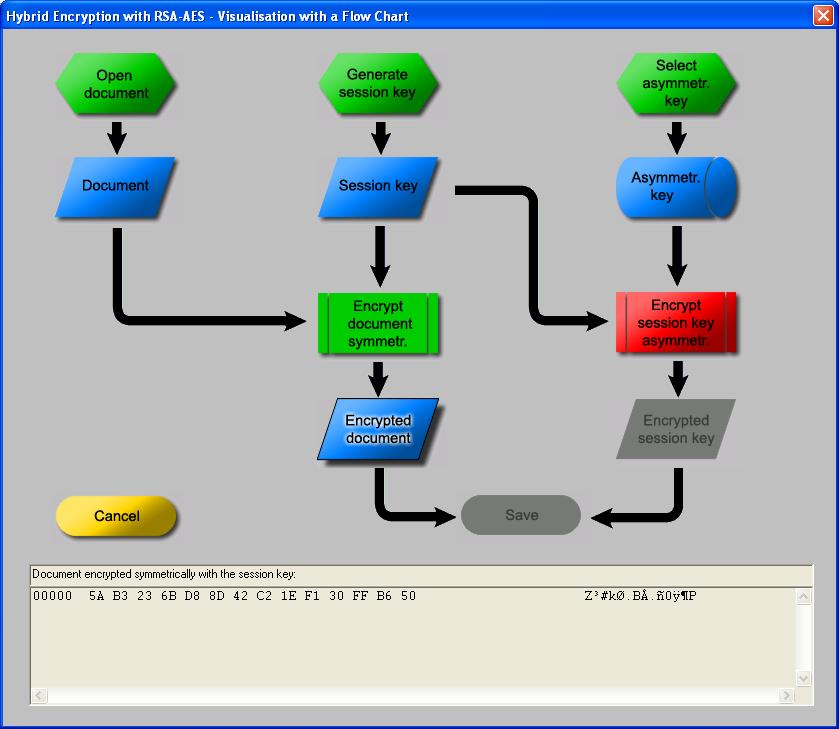

Symbol for preliminary steps (e.g. choosing a file)

Symbol for process data (e.g. the session key)

Symbol for stored data (e.g. the asymmetric key)

Symbol for a named standard procedure (e.g. encrypt text symmetrically)
You can reach this dialog via the menu entry Encrypt/Decrypt \ Hybrid \ RSA-AES Encryption.
This dialog lets you go through all the steps of the hybrid encryption algorithm, thereby making the seemingly complex procedure transparent.
Hybrid encryption is the most widely deployed method of transferring encrypted data. More details on the hybrid encryption method can be found in the CT Book.

Figure: Dialog visualising hybrid encryption
If you have not already created an asymmetric key, you have to do this before calling the dialog for hybrid encryption:
In the menu of CrypTool under Digital Signatures/PKI \ PKI \ Key Generation/Import you can find appropriate tools for generating RSA key pairs and storing them in the CrypTool database (PSE file).
After having gone through all the steps of the hybrid encryption, you can look at the data you have generated in a separate window by clicking the button "Save".
This data can then be used as input for hybrid decryption, which inverts the whole encryption process.
The dialog is designed in a way that you experiment with hybrid encryption playfully. Every step of the algorithm is depicted by graphical buttons shaped after data flow plan pictograms.
|
Symbol for preliminary steps (e.g. choosing a file) |
|
Symbol for process data (e.g. the session key) |
|
Symbol for stored data (e.g. the asymmetric key) |
|
Symbol for a named standard procedure (e.g. encrypt text symmetrically) |
The color of the symbols informs you about the state of the corresponding step resp. data element.
| Red | Open tasks (preparation / input / processes) |
| Green | Completed tasks (preparation / input / processes) |
| Blue | Available data (display and further processing possible) |
| Gray | Inactive (unavailable data / processes with missing input data) |
Dependencies between steps are symbolised by arrows between the corresponding symbols. Active buttons (red/green/blue) can be selected in arbitrary order and even multiple times. Inactive buttons (gray) cannot be selected. Processes are only activated if all necessary pre-conditions are met.
The diagram is divided in four rows:
Note:
If the list of RSA keys is empty you first must create a key pair for the receiving user via menu Key Management \ Key Generation.